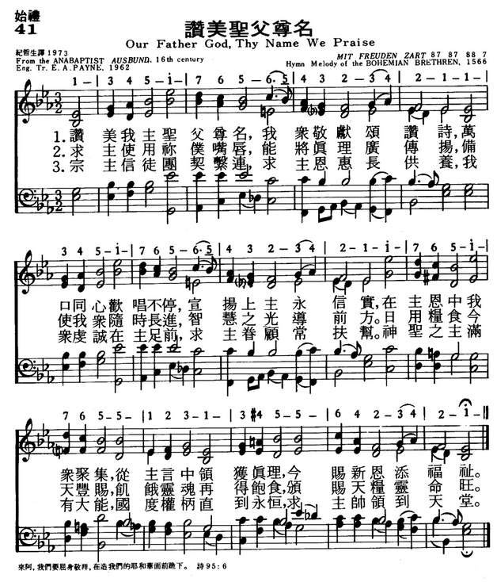

|
|
|
|
O Gott Vater, wir loben dich (Ausbund Hymn No.131) |
041赞美圣父尊名
1.赞美我主圣父尊名，我众敬献赞诗，
万口同心欢唱不停，宣扬上主永信实， 在主恩中我众聚集，从主恩言中领获真理， 今赐新恩添福祉。 2.求主使用你仆嘴唇，能将真理广传扬， 备使我众随时长进，智慧之光导前方。 日用粮食今天丰赐，饥饿灵魂再得饱食， 颁赐天粮灵命旺。 3.宗主信徒团契紧连，求主恩惠长供养， 我众虔诚在主足前，求主眷顾常扶帮。 神圣之主满有大能，国度权柄直到永�琚A 求主帅印领到天堂。 |
|
https://www.mred365.cn/szxg/7044.html
 https://hymnary.org/hymn/TPH2018/page/462 MIT FREUDEN ZART
|
|
|
|
|


Sing Praise to God Who Reigns Above (Mit Freuden Zart) https://www.youtube.com/watch?v=xeQSnJE64F8 -
Our Father God Thy Name We Praise https://www.youtube.com/watch?v=_h0krjn10M4 -
SE Samonte https://www.youtube.com/watch?v=9ZBpaOMpwS4
LX1793
Our Father God, Thy Name
We Praise
041赞美圣父尊名
| First Line: | Our Father,God, thy name we praise |
| Title: | Our Father God, Thy Name We Praise |
| German Title: | O Gott, Vater, wir loben dich |
| Author: | Leenaerdt Clock |
| Translator: | Ernest A. Payne (1960) |
| Source: | Anabaptist Ausbund, 16th Century |
| Language: | English |
| Copyright: | Used by permission of Ernest A. Payne |
Tune Information
| Title: | MIT FREUDEN ZART |
| Meter: | 8.7.8.7.8.8.7 |
| Incipit: | 13451 76565 43234 |
| Key: | D Major |
| Source: | Bohemian Brethren's Kirchengesänge, 1566 |
| Copyright: | Public Domain |
Notes
MIT FREUDEN ZART has some similarities to the French chanson "Une pastourelle gentille" (published by Pierre Attaingnant in 1529) and to GENEVAN 138 (138). The tune was published in the Bohemian Brethren hymnal Kirchengesänge (1566) with Vetter's text "Mit Freuden zart su dieser Fahrt."
Splendid music for a great text, this rounded bar form tune (AABA) is one of the great hymn tunes of the Reformation. Sing the outer stanzas in unison and the middle ones in harmony, although the final phrase, "to God all praise and glory," could be sung consistently in unison.
--Psalter Hymnal Handbook, 1988